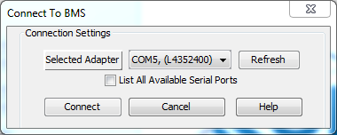

Open the OrionBMS JR utility.
Go to File → Connect to BMS.
In the connection dialog, select the appropriate serial port and press Connect to connect to the BMS.
To disconnect from the BMS, simply select "File → Disconnect From BMS" from BMS from the menu instead.
If an adapter is not found by the utility (None Found), please check the Adapter Not Found troubleshooting section.
A USB to Serial adapter can be plugged directly into the BMS without an extension cable, however if a serial extension cable is used to physically extend the connection or if the BMS is connected to the and the BMS, it must be a straight through serial cable. Any other type of RS-232 cable including a null-modem cable will NOT work.
There is an option to list all available serial ports. By default the utility will automatically check every available serial port for data coming from a JR BMS. If it fails to detect a JR BMS it will not list this serial adapter as an option. In some rare cases a serial port may be skipped incorrectly so this option allows the user to force the utility to attempt connection on an existing port.
If the connection fails, please check the Connection to BMS Failed troubleshooting section.
| < Installation Guide for Linux | Creating and Uploading a Profile > |